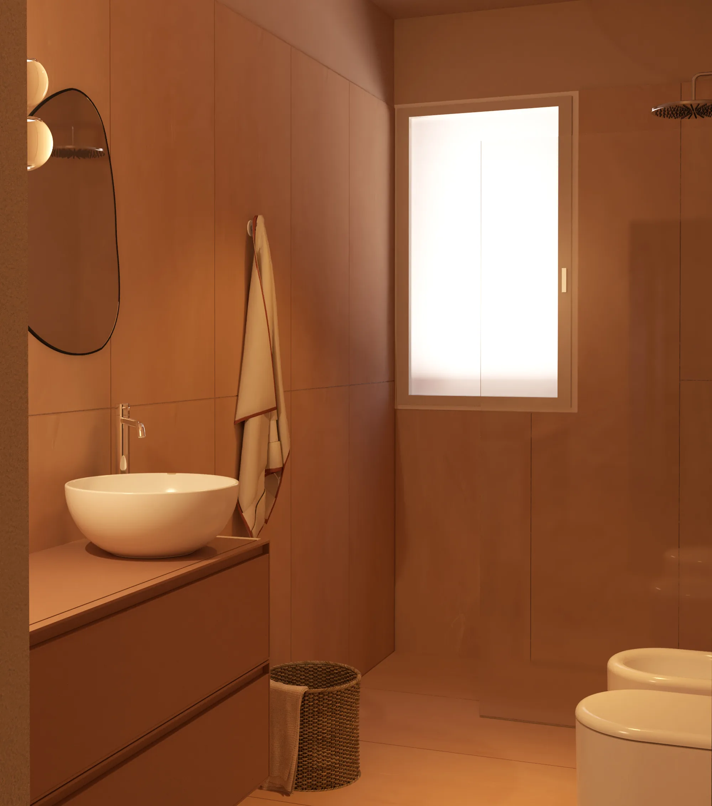

1 / 3
Le Pietre
Interni residenziali
Castelfranco Emilia, Italia
2027, in costruzione
Interni residenziali
Castelfranco Emilia, Italia
2027, in costruzione
Le Pietre è un edificio residenziale di nuova costruzione a Castelfranco Emilia, promosso da Modena Ingegneria su progetto architettonico di TT Architettura. Lo studio ha curato il progetto degli interni degli appartamenti.
Ogni ambiente ha un proprio carattere. Nel soggiorno la cucina verde salvia prosegue in una parete curva con specchi tondi; nell'attico la zona giorno, in toni chiari, si apre sul terrazzo; nel bagno lastre di grande formato color terracotta avvolgono pareti e pavimento.
L'edificio è in costruzione, con fine lavori prevista nel 2027. Render: VISION.
Samuele SilvestriArchitetto
Via Asiago 58, 41125 Modena
info@samuelesilvestriarchitetto.com
+39 366 493 8286
Instagram Iscr. Ordine degli Architetti di Modena n°1437 – sez. A
P.IVA 04180440366


